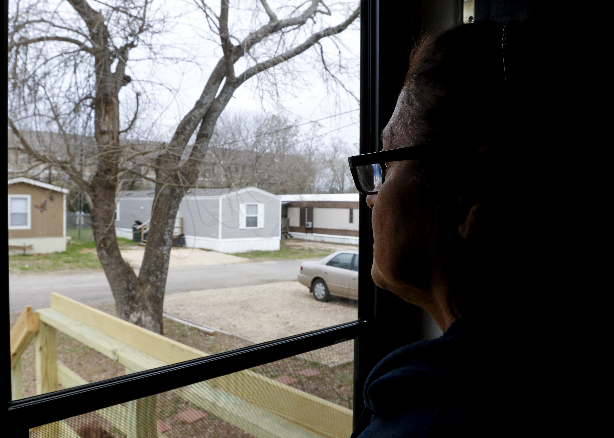

However, that hasn’t been the experience that a group of residents at Siesta Mobile Home Park have had since RV Horizons took over the park.
“They’re negligent,” Siesta resident Jacqui said of management over the past couple of years. (Residents asked that their last names be omitted because of privacy concerns.)
“Everything is just wrong,” a resident named Maria added. A small group of Siesta residents have shared concerns and complaints ranging from premature eviction notices and seemingly arbitrary water bills to health and safety concerns throughout the park.
Siesta resident Dora has a stack of notices and threats of fines issued to her – something that Maria said management has done “to the point that they would really scare us.”
For instance, rent at the park is due on the first of the month but residents have until the fifth day of the month to pay (unless the fifth falls on a weekend, in which case rent is due on the third). However, the residents said, if their rent had not posted by the end of the day on the first of the month, the next day there would be eviction notices on their doors.

Siesta Mobile Home Park resident Dora holds a copy of the late rental payment notice that residents receive on the fifth of the month;however, many residents have stated that they receive eviction notice as early as the 2nd of the month if they haven't yet paid.
Residents have complained about vast differences in their water bills, which are included with their rent, and with water being turned off frequently because of pipe bursts.
“All day long we’ve had no water,” a resident named Mattje said during one gathering of residents.
But more numerous are the complaints about the state of the park and what residents consider hazardous conditions there. Maria pointed out that a whole section of fence abutting an apartment complex has been knocked down, letting outsiders walk into and through the park. The laundry room at the park has just two machines in it, all the windows are broken out, and there is trash on the floor and outside amid piles of broken glass. The park’s swimming pool has been filled in with dirt, and a Dumpster sits on the park grounds, full of rubble and surrounded by more piles of refuse. Dora said the park is developing a rat and raccoon problem.
Mattje says the water and sewage system is old and in need of repair. The streets inside the park are rife with potholes. Maria mentioned the frequent water outages and electricity outages and said that utility workers have said the trees in the park need to be trimmed.
“When a storm comes or it’s real windy, we have to move our cars,” Maria said.
Residents complain that there is no on-site management provided by RV Horizons, the company that owns both Siesta Mobile Home Park and the River Road Mobile Home Park. What used to be the office at the front of the park now bears a letter in the window stating, in part, “Affective [sic] as of March 22, 2017 the Siesta office will no longer open we will only use as a drop box, if any tenants need to speak to our staff they will be located at the River Road office.”
“They don’t even care. Nobody even comes over here,” Maria said. Dora said residents have called the city code enforcement department several times to report problems, many of which she said the park’s owners are supposed to take care of.
Maria looks out the door of the home she has lived in fot 10 years and recently paid off in Siesta Mobile Home Park. Like many other residents, she fears the rising and unpredictable fees the park owners RV Horizons have started implementing and what this means for her future.
“The owners of the Siesta Mobile Home Park are required to maintain their property in accordance with state law and local ordinance,” said Kenneth Rocha, code compliance manager with the city of San Marcos. “All streets, utilities, structures and landscaping within the mobile home park are privately owned and maintained.
Rocha confirmed that city staff had investigated conditions in the park several times.
“Code Enforcement and Environmental Health staff has investigated numerous violations at the Siesta Mobile Home Park in 2017-2018 ranging from unsanitary conditions to common code violations such as, trash accumulation and junk vehicles.”
Rocha pointed out that the property owner is responsible for adequate maintenance of the roads, water, the border fence around the park, tree trimming and structures. “If the owner of the property has entered into contract with a home owner or lessee then it will spell out who is responsible for specific items named on the contract. This allocation of responsibility is between the tenant and the property owner,” Rocha continued. “The city does not enforce those contracts or agreements but holds the property owner ultimately responsible for all violations occurring on the property. This is where owners can charge tenants or withhold deposit for repairs or cleanups caused by the tenants based on the details of their rental contract. …“If the tenant has exhausted all means afforded to them through their lease and the landlord still has not made diligent efforts to repair the problem within a reasonable time it is suggested they contact legal representation. Another resource available to residents would be to explore the Austin Tenants’ Council which has recently entered into an agreement to serve all of Hays County. Code Compliance continues to work diligently with the property owner and tenants of Siesta Mobile Home Park to maintain a clean and safe living environment.” Although Frank Rolfe, one of the founders of RV Horizons, said in the New York Times Magazine article (“The Cold, Hard Lessons of Mobile Home U”) that it is more profitable to run a park that is clean and safe than “slumlording,” his business model is meant to keep things as inexpensive as possible. Some of the conditions at Siesta are in line with the tactics outlined in the article. RV Horizons, the article says, usually shuts down swimming pools in parks they purchase, ridding themselves of the cost and liability. The article quotes Rolfe as saying, “We don’t like laundry rooms or vending machines. We don’t like amenities of any kind.”
“Ours is a strict ‘no pay, no stay’ policy,”
The article also says that the company starts eviction proceedings against tenants who are late with rent as soon as local laws allow.
“Ours is a strict ‘no pay, no stay’ policy,” Rolfe is quoted as saying. Hays County court records support Rolfe’s description of RV Horizons’ practices; the company is listed as a plaintiff in 88 eviction suits filed between June 2016 and mid-January 2018. Some defendants’ names show up in three or four – or in one case, nine -- eviction cases during that time period. By comparison, the previous owner of the River Road park is listed as a plaintiff in 29 eviction or forcible entry detainer cases between 1995 and 2009, and the previous owner of Siesta is listed as a plaintiff in only 16 eviction cases between 2007 and 2015.
Number of Cases Filed by Type
Number of Cases 1994-2018
Siesta resident Dora said that three families have been evicted from the park recently, including a family with six children and one woman with several children who fell behind on her rent.

Nellie, former resident of the Siesta Mobile Home Park, said she had lost her job but found another one shortly thereafter. She tried to make a payment arrangement with management, but she was evicted nonetheless; the management office at River Road has a sign on the wall saying, “No partial payments will be accepted! No payment arrangements will be granted!”
Nellie is named as a defendant three times in the list of RV Horizons’ eviction cases, most recently in September 2017, when she was evicted and her trailer was hauled away.
“My mom and dad have the kids,” she said, explaining that she has been living in a motel since she was removed from the park. “It hurts because I don’t have my kids.”
Amid their mounting concerns, the Siesta Mobile Home Park residents decided to do something: They decided to organize. Following the example of residents of the North Lamar Mobile Home Park in Austin – another RV Horizons property – the residents formed a tenants association to present their concerns to management.
“Our purpose is to present this to the community,” one of the residents said. “If we don’t say something, no one will.”